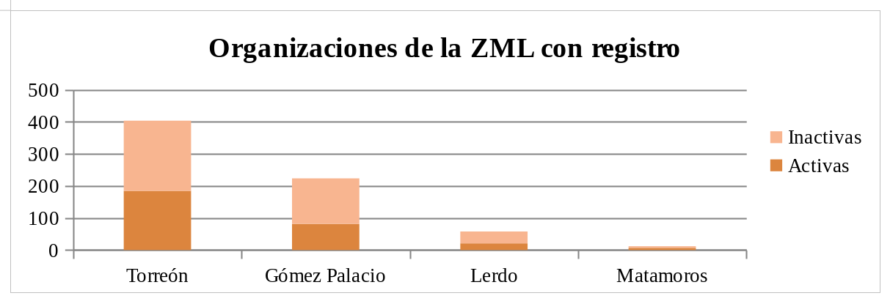
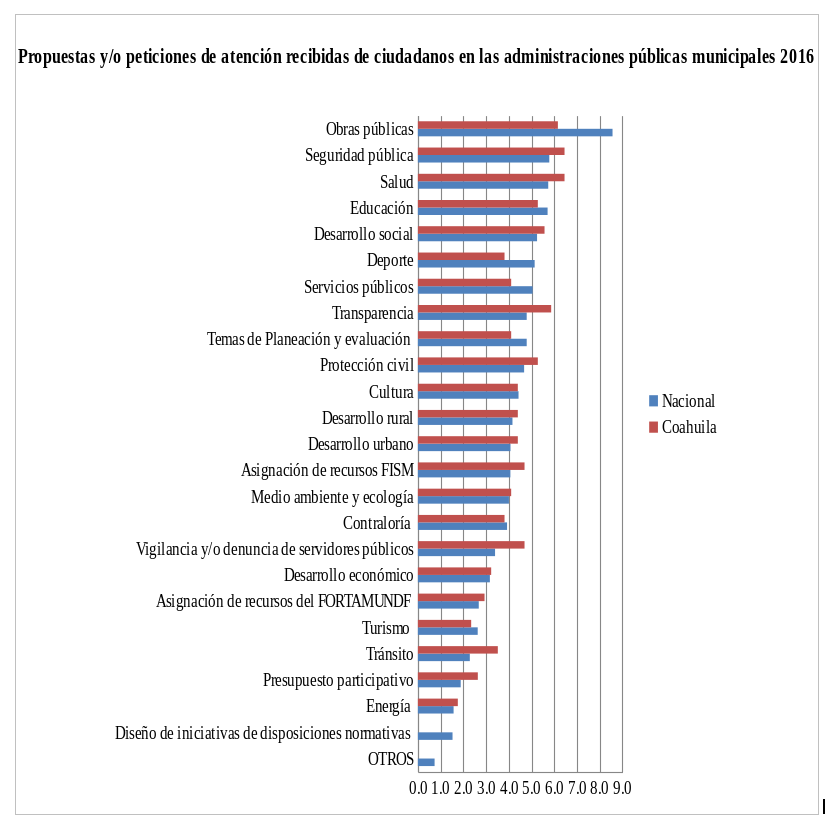

Durante el periodo del 2016, las administraciones municipales del estado de Coahuila recibieron 48,407 trámites realizados ante las unidades de transparencia de las administraciones municipales; de las cuales 9,747 fueron solicitudes de acceso a la información, 14 para protección de datos; 35,511 consultas realizadas al portal de obligaciones de transparencia para obtener información y 135 asesorías atendidas en materia de acceso a la información.
Asimismo, se abrió el espacio para propuestas y/o peticiones de atención recibidas de ciudadanos en las administraciones públicas municipales del estado de Coahuila en los temas de planeación y evaluación, contraloría, vigilancia y/o denuncia de servidores públicos, transparencia, diseño de iniciativas de disposiciones normativas, seguridad pública, tránsito, protección civil, servicios públicos, obras públicas, desarrollo urbano, desarrollo social, desarrollo económico, medio ambiente y ecología, desarrollo rural, presupuesto participativo, educación, cultura, deporte, salud, energía, turismo, entre otras.
A nivel nacional las áreas de la administración pública con mayores espacios para la participación y/o consulta ciudadana fueron obras públicas, seguridad pública, salud y educación. Mientras que en el estado de Coahuila las que abrieron el mismo espacio fueron seguridad pública y salud en misma cantidad, obras públicas y transparencia.
Los temas de menor número de espacio en Coahuila fueron turismo, energía y diseño de iniciativas de disposiciones normativas. Mientras que a nivel nacional los temas con menor número de espacios fueron presupuesto participativo, energía y diseño de iniciativas de disposiciones.
La participación ciudadana, como describe Báñez Tello, es un término ambivalente, en el que se tiene la participación formal cuya expresión es el sufragio y la calidad y cantidad de información que obtiene el ciudadano; así como la participación informal que se presenta a través de movimientos sociales y asociacionismos.
Por otro lado el INEGI define la asociación civil como “aquella entidad privada en donde un grupo de personas se organizan y asocian para alcanzar objetivos de carácter social, científico, artístico, de recreo o de cualquier otra índole, […] se caracterizan porque son organizaciones autónomas que no pertenecen al gobierno y trabajan de forma organizada e independiente a figuras gubernamentales en actividades de carácter social o de beneficio para la sociedad”.
De acuerdo con la Secretaria de Administración Tributaria (SAT) a nivel nacional se tiene un registro de 265,156 personas morales con fines no lucrativos para enero del 2018, este régimen incluye a sociedades de inversión, administradoras de fondos para el retiro, sindicatos, cámaras de comercio e industria, colegios de profesionales, instituciones de asistencia o beneficencia y asociaciones civiles sin fines de lucro.
La Comisión de Fomento de las Actividades de las organizaciones de la sociedad civil afirma que existen 698 asociaciones en la zona metropolitana: 224 en Gómez Palacio, 58 en Lerdo, 12 en Matamoros, 404 en Torreón. De estos registros 588 están activas, 142 en Gómez Palacio, 37 en Lerdo, 5 en Matamoros y 219 en Torreón.
Las organizaciones inactivas son aquellas que carecen de por lo menos dos informes anuales recientes, por lo que advierte sobre el cumplimiento de sus obligaciones. Lo que significa no se puede avalar la vigencia y la certeza de los datos que se muestran en el registro actualmente.
Gómez Palacio y Torreón tienen el mayor número de asociaciones en la Zona metropolitana, sin embargo el 36% de ellas en ambos municipios están activas.
¿Quiénes participan?
El ciudadano promedio dedica 57 horas de su semana a actividades productivas, de las cuales 30.9 horas las dedica a actividades para el mercado y bienes de autoconsumo, 19.9 horas a la semana en trabajo doméstico no remunerado para el propio hogar, 4.7 horas a la semana en el trabajo no remunerado de cuidado a integrantes del hogar y 1.6 horas a la semana en trabajo no remunerado como apoyo a otros hogares y trabajo voluntario, de acuerdo con la Encuesta Nacional sobre Uso del Tiempo 2014.
La pérdida de legitimidad a la política tradicional ha propiciado un ambiente de rechazo hacia la participación, en la última evaluación de la CEPAL se indica que la confianza a las instancias gubernamentales ha disminuido.
Joan Font sugiere condiciones que pueden favorecer un espacio de participación los cuales deben ser acompañados de amplios espacios de participación. El primer aspecto se enfoca en reforzar el sector participativo.
Estas asociaciones deben tener un proceso de capacitación que fortalezca su organización y convertirse en actores líderes en la participación en el proceso de temas prioritarios, adopción, aplicación y evaluación de políticas públicas.

Gráfica 1. Número de organizaciones en la Zona metropolitana de la Laguna, que cuentan con registro para obtener apoyos federales. Fuente: datos abiertos del Servicio de Administración Tributaria.

Gráfico 2. Datos de Administraciones públicas municipales con espacio para la participación y/o consulta ciudadana, por entidad federativa según temas seleccionados 2016. Fuente: Censo Nacional de Gobiernos Municipales y Delegaciones 2017, Tabulados básicos.